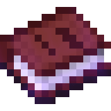
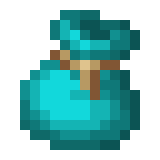

Servicios y Talleres
En la Biblioteca Amoxcalli contamos con una variedad de servicios y actividades pensadas para toda la comunidad. Desde talleres semanales hasta consulta gratuita de libros, ¡hay algo para todos!
Resumen de servicios
| Servicio / Taller | Día | Horario |
|---|---|---|
| Círculo de lectura | Viernes | 4:30 p.m. |
| Cafecito literario | Lunes | 4:30 p.m. |
| Consulta de libros | Lun – Vie | 8:00 a.m. – 7:00 p.m. |
| Visitas guiadas a escuelas | Por agenda | A convenir |
| Hora del cuento | Por programa | A convenir |
| Viernes recreativos | Último viernes del mes | A convenir |
Talleres semanales
 Círculo de Lectura
Círculo de Lectura
Un espacio donde lectores de todas las edades se reúnen para compartir sus lecturas, comentar libros y descubrir nuevos títulos juntos.
- Día: Viernes
- Hora: 4:30 p.m.
Una reunión informal para hablar de libros, autores y lecturas en un ambiente relajado y amigable. ¡Perfecta para comenzar la semana!
- Día: Lunes
- Hora: 4:30 p.m.
Servicios permanentes

Consulta de LibrosAccede de forma gratuita a nuestro acervo bibliográfico dentro de las instalaciones de la biblioteca. Contamos con material para todas las edades y temas.
- Disponible: Lunes a Viernes
- Horario: 8:00 a.m. – 7:00 p.m.
Llevamos la biblioteca hasta los salones de clase. Realizamos visitas guiadas a escuelas para fomentar el amor por la lectura desde temprana edad.
- Disponible: Por agenda
- Horario: A convenir
 Hora del Cuento
Hora del Cuento
Sesiones de cuentacuentos dirigidas principalmente a niñas y niños, donde la imaginación y la creatividad son las protagonistas.
- Disponible: Por programa
- Horario: A convenir

Viernes RecreativosUna tarde de actividades lúdicas y recreativas para toda la familia, organizada los viernes de Consejo Técnico o el último viernes de cada mes.
- Día: Viernes de Consejo Técnico o último viernes del mes
¿Tienes dudas?
Para más información sobre fechas, horarios y registro en alguna actividad, acude directamente a la Biblioteca Amoxcalli o contáctanos por teléfono o correo. ¡Con gusto te orientamos!
Regresar al inicio